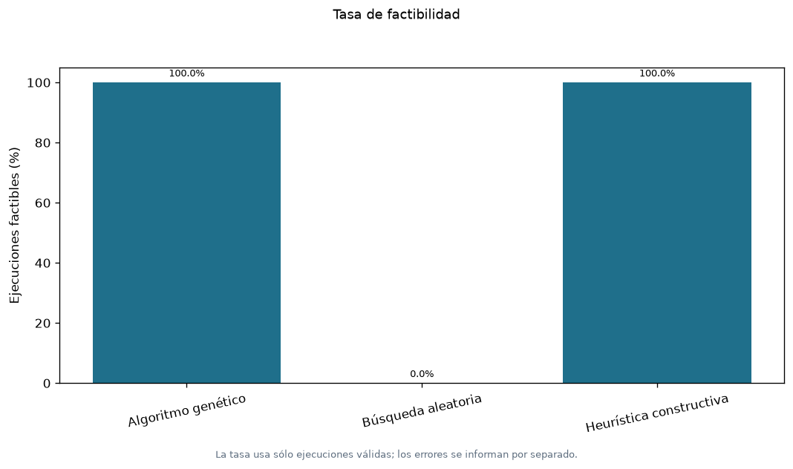
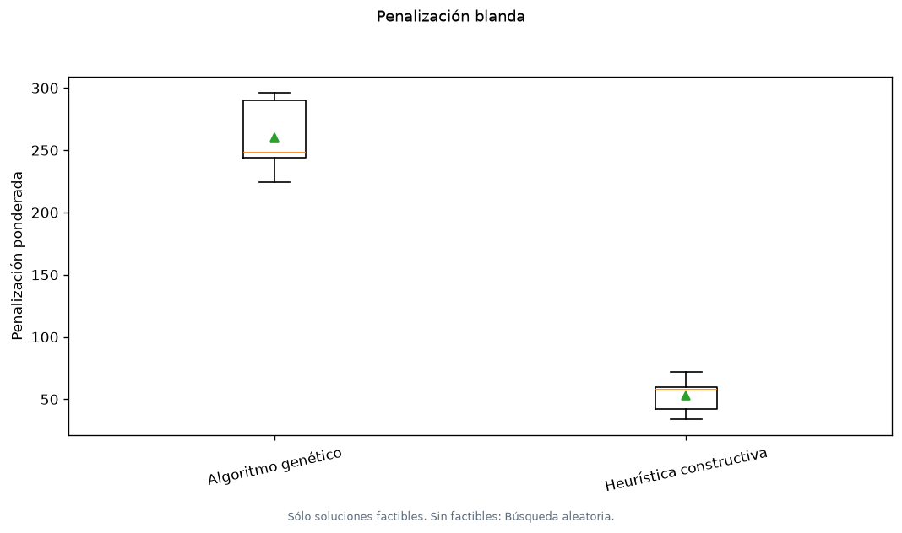
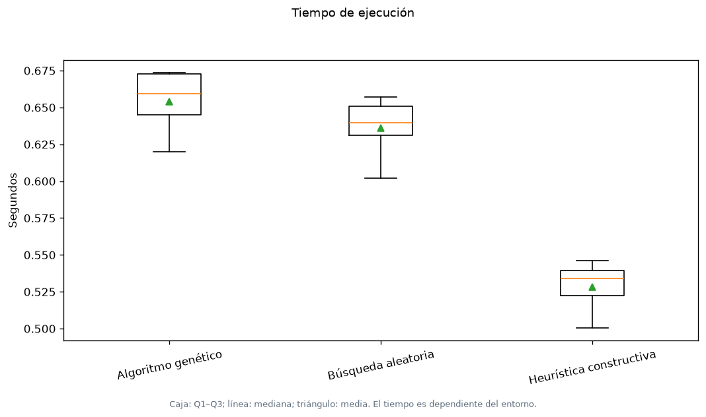
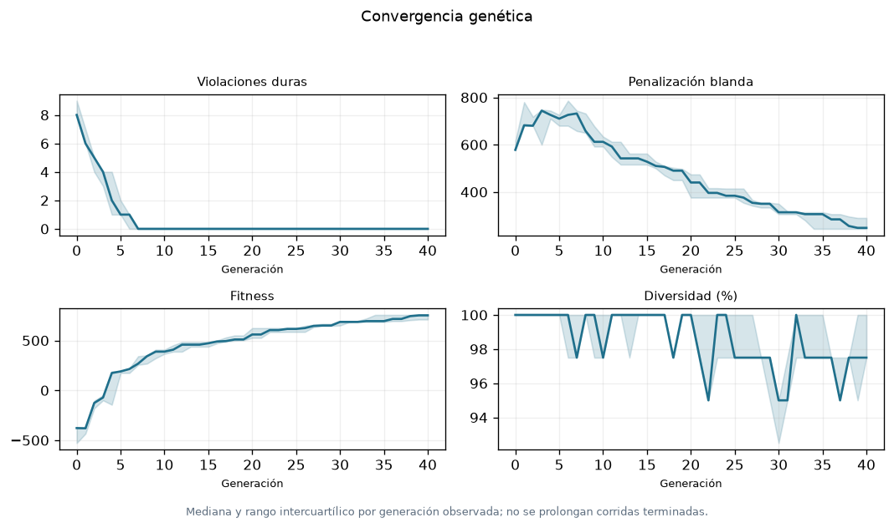

Estado: completado · Escenario: pequeno ·
Huella SHA-256: a301536c83fdc524d6380f52ce857d3310d7063487dfba2d0090363e9c347f2b
Muestras válidas: 5 · Factibles: 5 · Tasa: 100.0%
Muestras válidas: 5 · Factibles: 0 · Tasa: 0.0%
Muestras válidas: 5 · Factibles: 5 · Tasa: 100.0%
| Método | Rep. | Semilla | Factible | Duras | Blanda | Fitness | Evaluaciones | Tiempo (s) | Parada |
|---|---|---|---|---|---|---|---|---|---|
| Algoritmo genético | 1 | 42 | Sí | 0 | 290 | 710 | 4042 | 0.6729 | generaciones_completadas |
| Búsqueda aleatoria | 1 | 42 | No | 7 | 758 | -458 | 4042 | 0.6571 | presupuesto_agotado |
| Heurística constructiva | 1 | 42 | Sí | 0 | 42 | 958 | 4042 | 0.5459 | presupuesto_agotado |
| Algoritmo genético | 2 | 43 | Sí | 0 | 244 | 756 | 3976 | 0.6736 | generaciones_completadas |
| Búsqueda aleatoria | 2 | 43 | No | 9 | 552 | -452 | 3976 | 0.6509 | presupuesto_agotado |
| Heurística constructiva | 2 | 43 | Sí | 0 | 72 | 928 | 3976 | 0.5394 | presupuesto_agotado |
| Algoritmo genético | 3 | 44 | Sí | 0 | 296 | 704 | 3961 | 0.6592 | generaciones_completadas |
| Búsqueda aleatoria | 3 | 44 | No | 7 | 612 | -312 | 3961 | 0.6396 | presupuesto_agotado |
| Heurística constructiva | 3 | 44 | Sí | 0 | 60 | 940 | 3961 | 0.5339 | presupuesto_agotado |
| Algoritmo genético | 4 | 45 | Sí | 0 | 224 | 776 | 3895 | 0.6448 | generaciones_completadas |
| Búsqueda aleatoria | 4 | 45 | No | 6 | 710 | -310 | 3895 | 0.6313 | presupuesto_agotado |
| Heurística constructiva | 4 | 45 | Sí | 0 | 34 | 966 | 3895 | 0.5224 | presupuesto_agotado |
| Algoritmo genético | 5 | 46 | Sí | 0 | 248 | 752 | 3718 | 0.6199 | generaciones_completadas |
| Búsqueda aleatoria | 5 | 46 | No | 8 | 498 | -298 | 3718 | 0.6021 | presupuesto_agotado |
| Heurística constructiva | 5 | 46 | Sí | 0 | 58 | 942 | 3718 | 0.5005 | presupuesto_agotado |




Interpretación descriptiva; no constituye una prueba de superioridad estadística. Mayor tasa de factibilidad observada: 100.0% (Algoritmo genético, Heurística constructiva). Menor mediana de penalización entre soluciones factibles: 58.00 (Heurística constructiva). El tiempo es secundario y puede variar según el equipo y la carga del sistema.
Resultados condicionados al escenario, semillas, presupuesto y pesos del modelo. El tiempo depende del equipo. La ausencia de una solución factible no demuestra imposibilidad matemática. No se afirma optimalidad global.